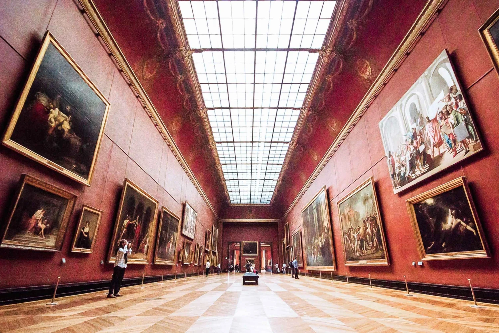

History of the Louvre Museum
The Louvre Museum is located in the heart of Paris, France, on the Right Bank of the Seine River.
It is situated within the 1st arrondissement, one of the city's central districts, known for its rich history and cultural landmarks.
The museum's main entrance is through the Louvre Pyramid, which stands in the Cour Napoléon courtyard.

The Louvre's transformation into an art museum began during the French Revolution. In 1793,
the National Assembly decreed that the Louvre should be used as a museum to display the nation's masterpieces.
The museum opened its doors to the public on August 10, 1793, featuring an initial collection of 537 paintings,
most of which were royal and confiscated church property.
Throughout the 19th and 20th centuries, the Louvre underwent numerous expansions and renovations.
Napoleon Bonaparte significantly increased the museum's collection with art seized during his military campaigns,
and the museum was temporarily renamed the Musée Napoléon. Subsequent French rulers, including Louis XVIII and Charles X,
continued to enrich the museum's holdings.
The most significant modern addition to the Louvre is the glass pyramid entrance, designed by architect I. M. Pei,
which was inaugurated in 1989. This contemporary structure stands in stark contrast to the classical architecture of the palace,
symbolizing the museum's blend of tradition and innovation.
Location of the Louvre Museum
The Louvre Museum is located in the heart of Paris, France, on the Right Bank of the Seine River.
It is situated within the 1st arrondissement, one of the city's central districts, known for its rich history and cultural landmarks.
The museum's main entrance is through the Louvre Pyramid, which stands in the Cour Napoléon courtyard.
The exact address of the Louvre Museum is Rue de Rivoli, 75001 Paris, France.
The museum is easily accessible by public transportation, including the Paris Métro,
with the Palais Royal - Musée du Louvre station (Line 1 and Line 7) being the closest stop. Additionally,
several bus lines serve the area, and there are nearby parking options for those arriving by car.
Nestled in a historic palace that was once the residence of French kings, the Louvre's location adds to its allure,
offering visitors not only a chance to view its extensive art collections but also to experience the grandeur of French architectural heritage.
The museum is surrounded by other notable attractions, such as the Tuileries Garden, the Place de la Concorde,
and the historic Pont des Arts pedestrian bridge, making it a central point for exploring the cultural heart of Paris.
Rules of the Louvre Museum
The Louvre Museum is committed to providing a safe and enjoyable experience for all visitors.
To ensure the protection of the artworks and the comfort of all guests, the museum has established the following rules:
All visitors must undergo the security checks at the museum entrances.
Suitcases and large bags are not allowed in the museum.
MAXIMUM SIZE OF BAG ALLOWED
You cannot bring large bags or suitcases to the museum but lockers are available free of charge for smaller items.
All umbrellas that do not fit into a bag must be left in self-service umbrella stands in the cloakroom.
Please note: Any items exceeding 55 x 35 x 20 cm will not be allowed in the museum (welcome area and exhibition rooms).
All items left in the lockers must be collected the same day. The museum shall not be held responsible for any items of value placed in the lockers.
Please contact us for further information.
POTOGRAPHY
You can take photos and videos in the permanent collections if they are for personal use. However,
you are not allowed to use selfie sticks, flash or lighting.
LEAVING THE MUSEUM
In order to help us manage the number of visitors and queues, any exit is final.
RESPECT THE ARTWORKS
To ensure the safety of the artworks and other visitors, in the exhibition rooms you are not allowed to:
- Eat;
- Drink;
- Smoke;
- Make a lot of noise;
- Touch the artworks;
- Run;
PROHIBITED ITEMS
- all categories of weapons and ammunition
- tools, in particular craft knives, screwdrivers, wrenches, hammers, pliers and clippers
- any explosive, flammable or volatile substance
- aerosol generators (dyes, paints and lacquers) containing substances likely to damage artworks, buildings and/or security equipment
- any item generating incapacitating or neutralising products, or electrical weapon used to neutralise individuals
- any artwork or antique
- all animals, with the exception of guide dogs or assistance dogs accompanying persons with motor or mental impairment
By following these rules, visitors can help maintain a respectful and enjoyable environment for everyone.
The Louvre Museum thanks you for your cooperation and wishes you a pleasant visit.
Staff and Board